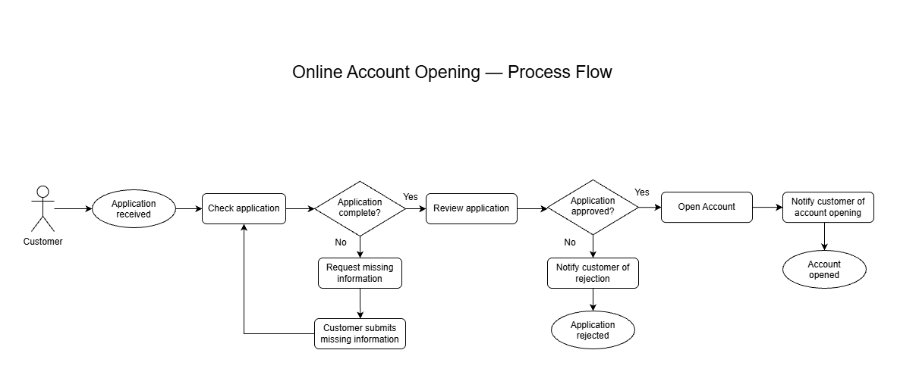

Online Account Opening
Personal case study · Simplified banking scenario
Featured project · Business Analysis
Online Account Opening — Business Analysis Case Study
A personal case study documenting a simplified online account-opening workflow, from receiving an application to checking completeness, requesting missing information, and recording an approval or rejection decision.
The documentation connects process steps with business rules, functional requirements, user stories, and acceptance criteria.
Illustrative portfolio project. Not an official bank workflow or an implemented banking system.
Online Account Opening — Process Flow

Case study overview, scope and assumptions
Business question
How can an online account-opening application move through completeness checks, requests for additional information, review, and a clear customer outcome?
Project objective
Document a clear, traceable workflow that prevents incomplete applications from reaching the review stage and describes how customers are informed of the final result.
Project approach
- Define the boundaries and assumptions of a simplified account-opening scenario.
- Map the main path and alternative outcomes in a flowchart using draw.io.
- Describe the business rules and system behaviour supporting the workflow.
- Express the requirements as user stories with observable acceptance criteria.
- Link the process steps, requirements, and stories in a traceability table.
Project context: This is a personal learning case study. Requirements are proposed for an illustrative scenario; they were not collected from a bank or validated with real stakeholders.
Delivery boundary: The deliverables are analysis documents and a process diagram. No working banking system, integration, or production deployment was built.
Scenario roles
- Customer: Submits an application, provides missing information, and receives the result.
- Operations specialist: Reviews complete applications and records an approval or rejection decision.
- Digital banking system: Supports application registration, completeness checks, routing, decision recording, and customer notifications.
In scope
- Receiving an online application.
- Checking application completeness.
- Requesting and receiving missing information.
- Repeating the completeness check.
- Reviewing complete applications.
- Recording an approval or rejection.
- Initiating account opening after approval.
- Notifying the customer of the outcome.
Out of scope
- Detailed identity verification, document authentication, compliance, and fraud checks.
- Actual eligibility criteria and account approval policies.
- Customer withdrawal, application expiry, and non-response handling.
- Technical failures, retries, and recovery during account opening or notification delivery.
- API specifications, database design, and implementation.
Assumptions
- Applications are received through an online channel.
- The system checks completeness against a predefined list of mandatory information. The exact fields are not specified in this case.
- Customers eventually provide the requested missing information.
- Complete applications are reviewed by an authorised operations specialist.
- For this simplified workflow, account opening succeeds after approval and notifications are delivered successfully.
Validation questions for a real project
- Which fields and documents are mandatory?
- What approval criteria and compliance checks must be applied?
- Which notification channels should be used?
- How long can an application wait for missing information?
- What should happen if account opening or notification delivery fails?
Process walkthrough
Main path
- The application is received.
- The system checks whether all mandatory information is present.
- A complete application moves to review.
- An operations specialist reviews the application and records a decision.
- If approved, account opening is initiated.
- After successful account opening, the customer is notified.
- The process ends with an opened account.
Alternative path: missing information
If the application is incomplete, the customer is asked to provide the missing information. After submission, the application returns to the completeness check. It does not move directly to review.
Alternative path: rejection
If the application is rejected during review, the customer is notified and the process ends with a rejected application. Account opening is not initiated.
Important distinction
Completeness and approval are separate decisions. A complete application contains the mandatory information, but it is not automatically approved.
Business rules and functional requirements
Business rules
The following rules are proposed for this illustrative scenario, not presented as actual bank policy.
| ID | Rule |
|---|---|
| BR-01 | Incomplete applications must not proceed to review. |
| BR-02 | Applications must be checked again after missing information is submitted. |
| BR-03 | Only complete applications may receive an approval or rejection decision. |
| BR-04 | Account opening may be initiated only for approved applications. |
| BR-05 | Customers must be notified after successful account opening or application rejection. |
Functional requirements
| ID | Requirement | Related rules |
|---|---|---|
| FR-01 | The system shall register an online account-opening application when it is submitted. | — |
| FR-02 | The system shall check the application against the predefined mandatory information list. | BR-01, BR-03 |
| FR-03 | The system shall identify missing mandatory information and request it from the customer. | BR-01 |
| FR-04 | The system shall accept additional information for the existing application and repeat the completeness check. | BR-02 |
| FR-05 | The system shall make complete applications available to an authorised operations specialist for review and prevent incomplete applications from entering the review queue. | BR-01, BR-03 |
| FR-06 | The system shall allow an authorised operations specialist to record one approval or rejection decision for a complete application under review. | BR-03 |
| FR-07 | The system shall initiate account opening for an approved application and record the successful result. | BR-04 |
| FR-08 | The system shall notify the customer after successful account opening or after a rejection decision. | BR-05 |
User stories and acceptance criteria
User stories
These stories describe the proposed behaviour of the simplified solution. Acceptance criteria are documented scenarios, not evidence of executed software tests.
US-01 · Submit an application
As a customer, I want to submit an account-opening application online, so that I can request an account without visiting a branch.
Acceptance criteria
- Given a customer submits an application through the online channel, when the system receives it, then the application is registered and a completeness check begins.
US-02 · Identify missing information
As a customer, I want to know which mandatory information is missing, so that I can complete my application.
Acceptance criteria
- Given an application is missing mandatory information, when the completeness check finishes, then the system identifies the missing items and requests them from the customer.
- Given the application is incomplete, when routing is evaluated, then it does not enter the review queue.
US-03 · Submit additional information
As a customer, I want to provide the requested missing information, so that my application can continue.
Acceptance criteria
- Given missing information has been requested, when the customer submits additional information, then it is associated with the existing application and the completeness check is repeated.
- Given the repeated check finds all mandatory information present, when the check finishes, then the application moves to review.
- Given mandatory information is still missing, when the repeated check finishes, then the remaining items are requested and the application stays outside the review queue.
US-04 · Review complete applications
As an operations specialist, I want to review complete applications, so that I can assess requests with the necessary information available.
Acceptance criteria
- Given an application has passed the completeness check, when an authorised specialist opens the review queue, then the application is available for review.
- Given the specialist selects the application, when its review view opens, then the submitted application information is displayed.
- Given an application has not passed the completeness check, when the review queue is opened, then that application is not listed.
US-05 · Record a review decision
As an operations specialist, I want to record an approval or rejection decision, so that the application can follow the appropriate next step.
Acceptance criteria
- Given a complete application is under review, when an authorised specialist confirms approval or rejection, then the system saves the selected decision.
- Given a decision has already been recorded, when a second decision is attempted, then the system does not create a conflicting decision within this simplified workflow.
US-06 · Open an approved account
As a customer with an approved application, I want my account to be opened, so that I can begin using the banking service.
Acceptance criteria
- Given an application is approved, when the approval decision is saved, then account opening is initiated.
- Given account opening succeeds, when the result is returned, then the successful opening is recorded.
- Given an application is rejected, when the decision is processed, then account opening is not initiated.
US-07 · Receive the outcome
As a customer, I want to receive a notification about the outcome, so that I know whether my account was opened or my application was rejected.
Acceptance criteria
- Given account opening has completed successfully, when the success is recorded, then the system sends an account-opening confirmation to the customer.
- Given an application is rejected, when the rejection decision is saved, then the system sends a rejection notification to the customer.
- Given an application is approved but account opening is not yet confirmed, when notifications are evaluated, then no account-opened confirmation is sent.
Requirements traceability
Connecting the documentation
This table links each process step to the functional requirements and user stories supporting it.
| Process step | Requirements | User stories |
|---|---|---|
| Application received | FR-01 | US-01 |
| Check application completeness / Application complete? | FR-02 | US-01, US-02, US-03 |
| Request missing information | FR-03 | US-02 |
| Customer submits missing information | FR-04 | US-03 |
| Review application | FR-05 | US-04 |
| Application approved? | FR-06 | US-05 |
| Open account / Account opened | FR-07 | US-06 |
| Notify customer of account opening | FR-08 | US-07 |
| Notify customer of rejection / Application rejected | FR-08 | US-07 |
Documentation outcome
The case study provides one process flow, five proposed business rules, eight functional requirements, and seven user stories with acceptance criteria.
These are documentation deliverables. No operational improvements, conversion gains, or processing-time reductions have been measured.